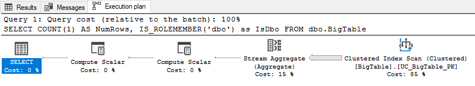
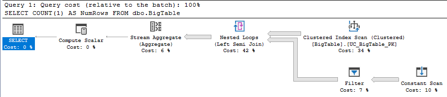

Row-level security supported by session detail table
This blog post was inspired by a Reddit post. Redditor 'ArchSerpo' posted a question asking about row-level security performance when predicate checks server or database roles, and Redditor 'Prequalified' responded with a suggestion that we'll work through below.
I work with multi-tenant databases in my day job.
Multi-tenant databases using the shared-database shared-schema strategy (i.e., data belonging to multiple tenants is resident within a single table) happen to be one of the key beneficiaries of row-level security.
The other key beneficiary would be applications requiring stringent user access control within any given tenancy. Think medical records that are held in confidence by a General Practice employing multiple General Practitioners, for example, where your General Practitioner should be able to see your medical history but other doctors working within the same building should not.
I suspect row-level security is still a relatively underused security control within SQL Server databases, and part of that is very likely because of query performance issues such as the one that led to this Reddit question.
So let's take a look.
SQL Server version
I'm working with SQL Server 2016 Developer Edition.
SELECT @@VERSION;Microsoft SQL Server 2016 (SP2-GDR) (KB4583460) - 13.0.5108.50 (X64)
May 20 2022 20:28:29
Copyright (c) Microsoft Corporation Developer Edition (64-bit) on
Windows 10 Pro 10.0 <X64> (Build 19045: )Large table setup
Let's start with a sufficiently large table. We'll put 20 million rows in there to really encourage SQL Server to go parallel. To emulate a table with multi-tenant composition, we'll establish a tenant ID as follows:
- Generate a random
UNIQUEIDENTIFIERusingNEWID(). - Convert it to
BINARY(8). - Convert it once more to an
INT. - Take the absolute value using the
ABSfunction. -
Take the modulo - we'll work with
32767as that's the maximum positive value that is supported by theSMALLINTdata type. -
Convert it to a non-null value - in a manner that ensures SQL Server understands it's a non-null
value - using the
ISNULLfunction.
DROP TABLE IF EXISTS dbo.BigTable;
GO
WITH
lv0 AS (SELECT 0 g UNION ALL SELECT 0),
lv1 AS (SELECT 0 g FROM lv0 a CROSS JOIN lv0 b),
lv2 AS (SELECT 0 g FROM lv1 a CROSS JOIN lv1 b),
lv3 AS (SELECT 0 g FROM lv2 a CROSS JOIN lv2 b),
lv4 AS (SELECT 0 g FROM lv3 a CROSS JOIN lv3 b),
lv5 AS (SELECT 0 g FROM lv4 a CROSS JOIN lv4 b),
Number (Number) AS (SELECT ROW_NUMBER() OVER (ORDER BY (SELECT NULL)) FROM lv5)
SELECT
ISNULL(ABS(CONVERT(INT, CONVERT(BINARY(8), NEWID()))) % 32767, 0) AS TenantId,
ISNULL(Number, 0) AS Number
INTO dbo.BigTable
FROM Number
WHERE Number <= 20000000;
GO
ALTER TABLE dbo.BigTable
ADD CONSTRAINT UC_BigTable_PK
PRIMARY KEY CLUSTERED (TenantId, Number);
The successful creation of that primary key constraint UC_BigTable_PK on
dbo.BigTable implies that TenantId was in fact a non-null value. But we can
also examine the table's structure to confirm this:
EXEC sp_help 'dbo.BigTable';Column_name Type Computed Length Prec Scale Nullable
----------- ------ -------- ------ ---- ----- --------
TenantId int no 4 10 0 no
Number bigint no 8 19 0 noParallelism
Let's ensure we can in fact see evidence of parallel processing within the query plan.
We'll run a simple COUNT(1) query to do that, like so:
SET SHOWPLAN_TEXT ON;
GO
SELECT COUNT(1) AS NumRows
FROM dbo.BigTable;And we can see this query plan which features parallel operators:
|--Compute Scalar(DEFINE:([Expr1002]=CONVERT_IMPLICIT(int,[globalagg1004],0)))
|--Stream Aggregate(DEFINE:([globalagg1004]=SUM([partialagg1003])))
|--Parallelism(Gather Streams)
|--Stream Aggregate(DEFINE:([partialagg1003]=Count(*)))
|--Clustered Index Scan(OBJECT:([Dan].[dbo].[BigTable].[UC_BigTable_PK]))So far so good.
Now we'll quickly prove that checking server-level and database-level permissions does in fact undermine the query planner's ability to produce a parallel query plan.
When checking for membership in a server role, we see a non-parallel query plan:
SET SHOWPLAN_TEXT ON;
GO
SELECT COUNT(1) AS NumRows,
IS_SRVROLEMEMBER('sysadmin') as IsSysAdmin
FROM dbo.BigTable;|--Compute Scalar(DEFINE:([Expr1003]=is_srvrolemember(N'sysadmin')))
|--Compute Scalar(DEFINE:([Expr1002]=CONVERT_IMPLICIT(int,[Expr1006],0)))
|--Stream Aggregate(DEFINE:([Expr1006]=Count(*)))
|--Clustered Index Scan(OBJECT:([Dan].[dbo].[BigTable].[UC_BigTable_PK]))When checking for membership in a database role, we also see a non-parallel query plan:
SET SHOWPLAN_TEXT ON;
GO
SELECT COUNT(1) AS NumRows,
IS_ROLEMEMBER('dbo') as IsDbo
FROM dbo.BigTable;|--Compute Scalar(DEFINE:([Expr1003]=is_rolemember(N'dbo')))
|--Compute Scalar(DEFINE:([Expr1002]=CONVERT_IMPLICIT(int,[Expr1006],0)))
|--Stream Aggregate(DEFINE:([Expr1006]=Count(*)))
|--Clustered Index Scan(OBJECT:([Dan].[dbo].[BigTable].[UC_BigTable_PK]))Visually that latter query plan looks like this:

But the most straightforward indication is when we dig into the SELECT operator in the
query plan using the Properties window within SQL Server Management Studio (SSMS) to
observe the NonParallelPlanReason value, which is
CouldNotGenerateValidParallelPlan:

Erik Darling covers this quite well in his blog post Starting SQL: Why Your SQL Server Query Can't Go Parallel, Scalar Functions Edition.
Non-parallel row-level security predicate
The scalar function produces the same outcome when running within the context of a row-level security predicate function.
If we create a security predicate function that uses a scalar function within, we'll get the same
NonParallelPlanReason.
Firstly we'll create our predicate function and policy:
SET SHOWPLAN_TEXT OFF;
GO
DROP SECURITY POLICY IF EXISTS dbo.SecurityPolicy;
GO
DROP FUNCTION IF EXISTS dbo.SecurityPredicate_fn;
GO
CREATE OR ALTER FUNCTION dbo.SecurityPredicate_fn(
@TenantId INT
)
RETURNS TABLE
WITH SCHEMABINDING
AS
RETURN
SELECT 1 AS Result
WHERE IS_ROLEMEMBER('dbo') = 1;
GO
CREATE SECURITY POLICY dbo.SecurityPolicy
ADD FILTER PREDICATE dbo.SecurityPredicate_fn(TenantId)
ON dbo.BigTable
WITH (STATE = ON, SCHEMABINDING = ON);
GO
And then we'll re-run our COUNT(1) query as we did earlier.
SET SHOWPLAN_TEXT ON;
GO
SELECT COUNT(1) AS NumRows
FROM dbo.BigTable;When we observe the updated query plan we now see:
- One new element: A
Filteroperation. - A lack of
Parallelism-featuring query plan operators. -
A
NonParallelPlanReasonwith the valueCouldNotGenerateValidParallelPlan.
|--Compute Scalar(DEFINE:([Expr1003]=CONVERT_IMPLICIT(int,[Expr1006],0)))
|--Stream Aggregate(DEFINE:([Expr1006]=Count(*)))
|--Nested Loops(Left Semi Join)
|--Clustered Index Scan(OBJECT:([Dan].[dbo].[BigTable].[UC_BigTable_PK]))
|--Filter(WHERE:(STARTUP EXPR(is_rolemember(N'dbo')=(1))))
|--Constant Scan
Putting parallelism back on the table
Which brings us back to the idea in the Reddit post.
The solution proffered was a simple one: Derive the information of interest about the session (e.g.: the database-role and server-role membership of the login used to establish the session), store it in a table, and use that for the security predicate.
The poster suggested a temporary table, but I'm going to deviate a little here.
We'll confirm that @@SPID returns a SMALLINT value, and then create the table
so that it contains one row per conceivable SPID.
SET SHOWPLAN_TEXT OFF;
GO
SET STATISTICS XML, PROFILE OFF;
GO
SELECT
name,
is_nullable,
system_type_name,
max_length
FROM
sys.dm_exec_describe_first_result_set(
'SELECT @@SPID AS spid',
NULL,
NULL
);name is_nullable system_type_name max_length
---- ----------- ---------------- ----------
spid 0 smallint 2
Next, we'll create a dbo.SessionDetail table and fill it with one row per conceivable
session ID.
SET SHOWPLAN_TEXT OFF;
GO
DROP SECURITY POLICY IF EXISTS dbo.SecurityPolicy;
GO
DROP FUNCTION IF EXISTS SecurityPredicate_fn;
GO
DROP TABLE IF EXISTS dbo.SessionDetail;
GO
WITH
lv0 AS (SELECT 0 g UNION ALL SELECT 0),
lv1 AS (SELECT 0 g FROM lv0 a CROSS JOIN lv0 b),
lv2 AS (SELECT 0 g FROM lv1 a CROSS JOIN lv1 b),
lv3 AS (SELECT 0 g FROM lv2 a CROSS JOIN lv2 b),
lv4 AS (SELECT 0 g FROM lv3 a CROSS JOIN lv3 b),
lv5 AS (SELECT 0 g FROM lv4 a CROSS JOIN lv4 b),
Number (Number) AS (SELECT ROW_NUMBER() OVER (ORDER BY (SELECT NULL)) FROM lv5)
SELECT
ISNULL(CONVERT(SMALLINT, Number), 0) AS SessionNumber,
ISNULL(CONVERT(BIT, 0), 0) AS CanReadAnyRow,
ISNULL(CONVERT(INT, @@SPID), 0) AS TenantId
INTO dbo.SessionDetail
FROM Number
WHERE Number <= 32767;
GO
ALTER TABLE dbo.SessionDetail
ADD CONSTRAINT UC_SessionDetail_PK
PRIMARY KEY CLUSTERED (SessionNumber);
GOWe'll revise our security predicate:
SET SHOWPLAN_TEXT OFF;
GO
DROP SECURITY POLICY IF EXISTS dbo.SecurityPolicy;
GO
DROP FUNCTION IF EXISTS SecurityPredicate_fn;
GO
CREATE OR ALTER FUNCTION SecurityPredicate_fn(
@TenantId INT
)
RETURNS TABLE
WITH SCHEMABINDING
AS
RETURN
SELECT 1 AS Result
FROM dbo.SessionDetail
WHERE
SessionNumber = @@SPID AND
(
CanReadAnyRow = 1 OR
TenantId = @TenantId
);
GO
CREATE SECURITY POLICY dbo.SecurityPolicy
ADD FILTER PREDICATE dbo.SecurityPredicate_fn(TenantId)
ON dbo.BigTable
WITH (STATE = ON, SCHEMABINDING = ON);
GO
We can set session information in the dbo.SessionDetail table for a given session like so:
SET SHOWPLAN_TEXT OFF;
GO
UPDATE dbo.SessionDetail
SET
TenantId = @@SPID,
CanReadAnyRow =
ISNULL(
CONVERT(BIT, IS_ROLEMEMBER('db_datareader')),
ISNULL(
CONVERT(BIT, IS_ROLEMEMBER('dbo')),
IS_SRVROLEMEMBER('sysadmin')
)
)
WHERE
SessionNumber = @@SPID;
And re-run our COUNT(1) query to observe a parallel query plan:
SET SHOWPLAN_TEXT OFF;
GO
SELECT COUNT(1) AS NumRows
FROM dbo.BigTable;|--Compute Scalar(DEFINE:([Expr1005]=CONVERT_IMPLICIT(int,[globalagg1008],0)))
|--Stream Aggregate(DEFINE:([globalagg1008]=SUM([partialagg1007])))
|--Parallelism(Gather Streams)
|--Stream Aggregate(DEFINE:([partialagg1007]=Count(*)))
|--Nested Loops(Left Semi Join, WHERE:([Dan].[dbo].[SessionDetail].[IsSysAdmin]=(1) OR [Dan].[dbo].[SessionDetail].[IsDbo]=(1) OR [Dan].[dbo].[SessionDetail].[IsDbDataReader]=(1) OR [Dan].[dbo].[SessionDetail].[TenantId]=[Expr1006]))
|--Compute Scalar(DEFINE:([Expr1006]=CONVERT_IMPLICIT(int,[Dan].[dbo].[BigTable].[TenantId],0)))
| |--Clustered Index Scan(OBJECT:([Dan].[dbo].[BigTable].[UC_BigTable_PK]))
|--Table Spool
|--Clustered Index Scan(OBJECT:([Dan].[dbo].[SessionDetail].[UC_SessionDetail_PK]))At this point we once again have parallelism featuring in our query plan.

Gotchas
One challenge with this approach - using a normal table such as dbo.SessionDetail instead
of a
temporary table - is that it's difficult to enforce the updating of the row within the table to reflect
the details of the current session for a given @@SPID.
If a SPID was used previously by a sysadmin, for example, and then re-used
later by a non-sysadmin who did not update the dbo.SessionDetail row then that subsequent
session would be able to read all rows from dbo.BigTable.
In a way, using the temporary table might actually be a good control when it comes to mitigating this risk. After all, if the temporary table isn't created then it won't exist when the security predicate runs. This would mean a hard-failure when SQL Server attempts to run the query due to an object (the temporary table) not existing.
In other words, we would fail closed instead of silently failing open.
You could conceivably employ a logon trigger, but that might not be ideal if your SQL Server instance is
hosting numerous databases. But it is an option that could be made to work, and it would guarantee the
necessary update to dbo.SessionDetail that is required.
If you're operating in a database environment that doesn't deal in ad-hoc SQL queries, because
everything lives within Stored Procedures, then it gets a fair bit easier. You simply ensure that the
dbo.SessionDetail row update occurs as part of the stored procedure's preamble code
(alongside things like checking for invariants).